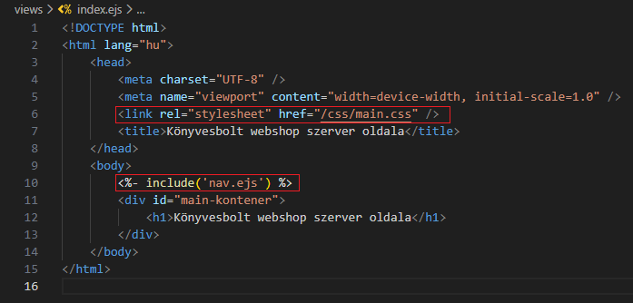
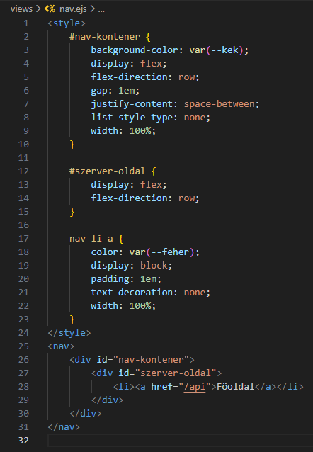
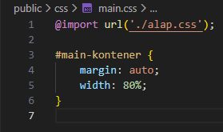
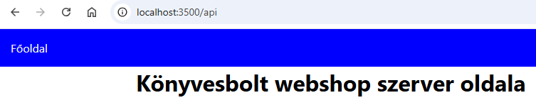
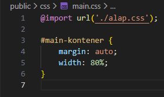
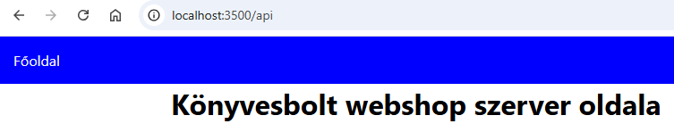

Alap route-olás - index.ejs, nav.ejs és alap.css, main.css
Alap route-olás - index.ejs, nav.ejs és alap.css, main.css

Ebben a részben a fő nézettel (view) és a stílusával fogunk foglalkozni.
-
Szerkesszük az
index.ejsésnav.ejsállományt. és-
<link rel="stylesheet" href="/css/main.css" />- mivel azapp.mjsállományban beállítottuk a hivatkozást apublicmappára, ezért minden elemére ilyen speciálisan tudunk hivatkozni. -
<%- include('nav.ejs') %>- anav.ejsállomány beimportálása.
-
-
Szerkesszük az
alap.cssésmain.cssállományt. , és 
